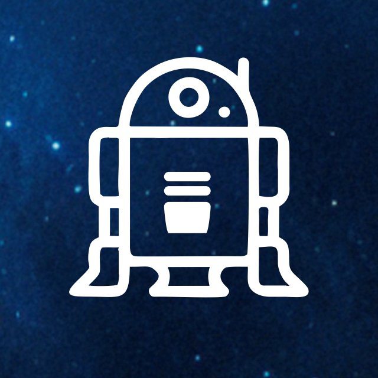
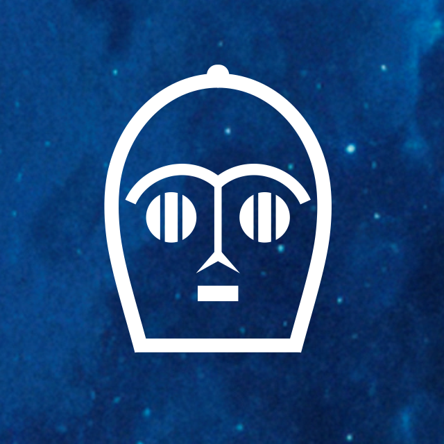
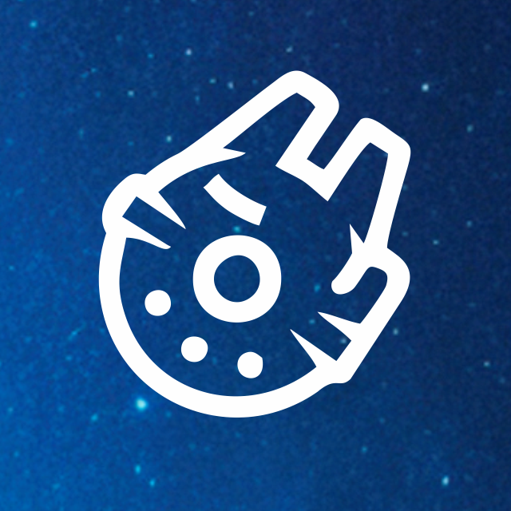
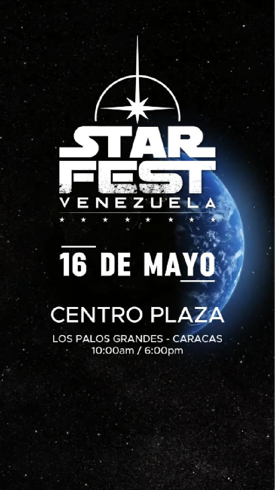
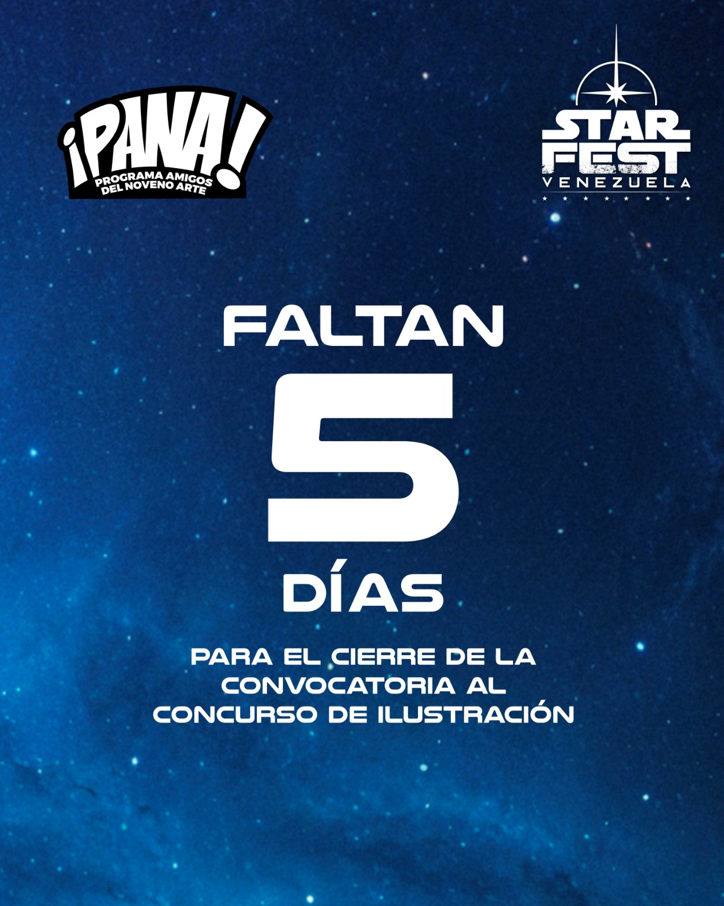
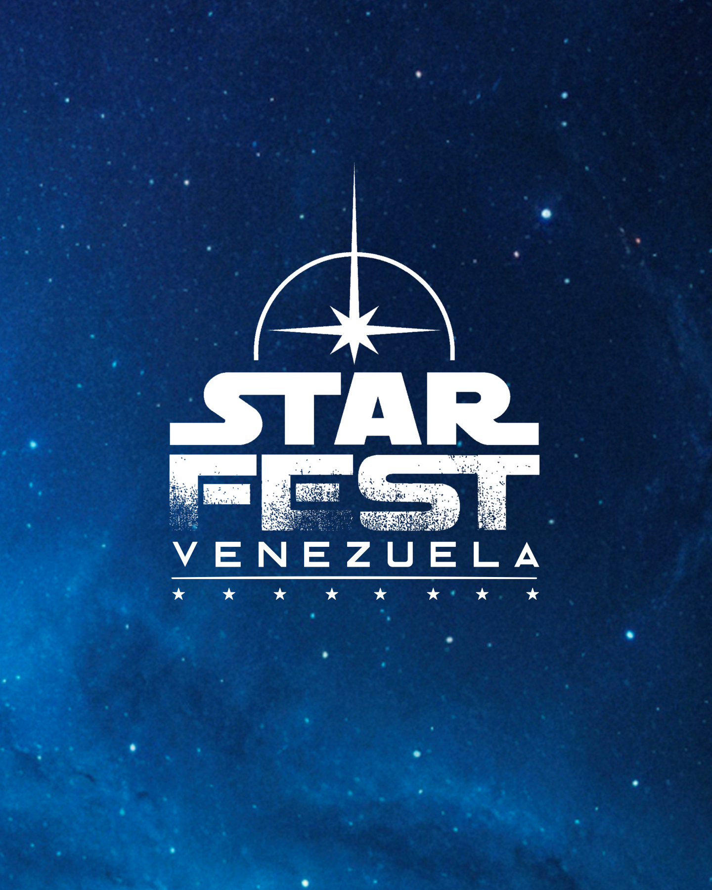

CHILE · COLOMBIA · VENEZUELA
UNA GALAXIA.
UNA COMUNIDAD.
Una celebración latinoamericana creada por fans para vivir, compartir y llevar más lejos la cultura que nos une.
DESLIZA ↓
STARFEST EN LATINOAMÉRICA
TRES PAÍSES.
UNA MISMA PASIÓN.
Cada edición tiene identidad local. Todas forman parte de una misma historia regional.
01ACTIVO
PRÓXIMA EDICIÓN
VENEZUELA
Caracas · 2027
02ACTIVO
CAPÍTULO REGIONAL
COLOMBIA
Próxima edición por anunciar
03LEGADO
HISTORIA STARFEST
CHILE
Parte del origen regional
LA EXPERIENCIA
NO VENGAS SOLO A VERLO.
VEN A VIVIRLO.
StarFest se diseña para que el visitante entre a una comunidad en movimiento, no para que observe una feria desde afuera.

01JUEGA
Desafíos, juegos interactivos y experiencias que te meten dentro del evento.

02CONOCE
Legiones, cosplayers, artistas, coleccionistas y comunidades que interactúan contigo.

03EXPLORA
Props, modelos, figuras, réplicas, memorabilia y piezas que normalmente no ves juntas.
CREA
Dibujo, arte, talleres, retratos y actividades para llevarte algo hecho por ti.
APRENDE
Charlas, conversatorios, demostraciones y encuentros alrededor del fandom.
PARTICIPA
Ven disfrazado, compite, fotografía, comparte y conviértete en parte del espectáculo.
PRINCIPIO STARFESTENTRADA LIBRE
Recorrer, descubrir, interactuar, ver exhibiciones y encontrarte con las comunidades forma parte de la experiencia base. Algunas actividades especiales pueden usar créditos o aportes opcionales.
FORMAR PARTE
¿CÓMO QUIERES
ENTRAR A STARFEST?
Tres públicos distintos, tres caminos directos. La web debe convertir interés en acción.
01
FANÁTICOS Y VISITANTESVIVE
STARFEST
Fechas, actividades, cosplay, programación, ubicación, FAQ y todo lo necesario para llegar listo.
Planifica tu visita02
COLECCIONISTAS Y COMERCIOEXHIBE
EN STARFEST
Trae tu colección para compartirla con nuevos públicos o reserva un espacio comercial para vender.
03
MARCAS Y ALIADOSLLEVA TU
MARCA
Patrocina experiencias, activa tu marca y conéctala con una comunidad apasionada.
ACTUALIDAD
ESTÁ PASANDO
EN STARFEST.
Una capa editorial que mantiene la organización viva antes, durante y después de cada edición.

SAVE THE DATE · DEMO
StarFest Venezuela prepara su próxima edición
Una nueva cita para fans, comunidades, coleccionistas y marcas.
Leer actualización ↗
CONVOCATORIA · DEMO
Nuevas colecciones para StarFest
¿Tienes piezas que merecen un público nuevo?
Conocer convocatoria ↗EXPOSITORES · DEMO
Lleva tu tienda o emprendimiento al evento
Mesas y espacios comerciales para la próxima edición.
Cómo participar ↗STARFEST
MAGAZINE
MAGAZINE
PUBLICACIONES · DEMO
La revista StarFest prepara una nueva edición
Historia, arte, comunidad y cultura fan en una publicación coleccionable.
Ver publicaciones ↗Contenido editorial ficticio para visualizar el prototipo. No representa anuncios oficiales.
PEDIGRÍ DIGITAL
LA HISTORIA
NO DESAPARECE.
Cada edición permanece en el archivo para que la trayectoria pueda verse, no solamente contarse.
2027PRÓXIMO
2026VENEZUELA · COLOMBIA
2025ARCHIVO
2024ARCHIVO
2023ARCHIVO

EDICIÓN DESTACADASTARFEST
STARFEST
VENEZUELA 2026
Galería, programa, actividades, publicaciones, aliados y memorabilia de la edición pueden vivir aquí como prueba permanente de lo ocurrido.
SF2027
★VZLA
03LATAM
MEMORIA FÍSICA
COLECCIONA
TU HISTORIA.
Créditos, pines, stickers, credenciales, posters y publicaciones anuales pueden convertir cada edición en una pieza que el fan quiera conservar.
“Yo estuve ahí” también puede ser parte de la marca.
EDITORIAL
PUBLICACIÓN OFICIALSTAR
FESTLATINOAMÉRICA2027
FESTLATINOAMÉRICA2027
PUBLICACIONES
STARFEST
La revista deja de ser un PDF aislado y se convierte en un activo editorial permanente: historias, entrevistas, arte, comunidad y espacios comerciales para aliados.
PRÓXIMA VISITA
PLANIFICA.
LLEGA. VÍVELO.
EDICIÓNVENEZUELA 2027
FECHAPOR ANUNCIAR
CIUDADCARACAS
ENTRADALIBRE
CREDIBILIDAD COMPARTIDA
QUIENES HAN
FORMADO PARTE.
Espacio reservado para sponsors, aliados, comunidades e instituciones verificadas.
PARTNER 01COMUNIDAD 02ALIADO 03MARCA 04ORGANIZACIÓN 05PARTNER 06
STARFEST LATINOAMÉRICALA GALAXIA